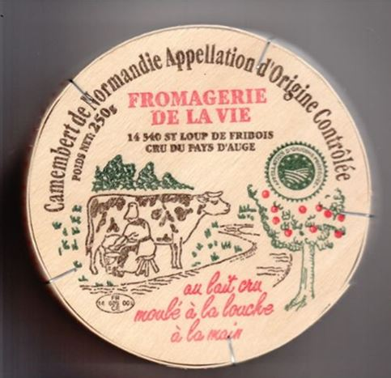

La France est connue, mondialement, pour sa gastronomie ; d’ailleurs, son repas gastronomique fait partie du patrimoine culturel immatériel de l’humanité depuis 2010. Selon les termes de la décision d’inscription « Le repas gastronomique met l’accent sur le fait d’être bien ensemble, le plaisir du goût, l’harmonie entre l’être humain et les productions de la nature. Parmi ses composantes importantes figurent : le choix attentif des mets parmi un corpus de recettes qui ne cesse de s’enrichir ; l’achat de bons produits, de préférence locaux, dont les saveurs s’accordent bien ensemble ; le mariage entre mets et vins ; la décoration de la table ; et une gestuelle spécifique pendant la dégustation (humer et goûter ce qui est servi à table). Le repas gastronomique doit respecter un schéma bien arrêté : il commence par un apéritif et se termine par un digestif, avec entre les deux au moins quatre plats, à savoir une entrée, du poisson et/ou de la viande avec des légumes, du fromage et un dessert. Des personnes reconnues comme étant des gastronomes, qui possèdent une connaissance approfondie de la tradition et en préservent la mémoire, veillent à la pratique vivante des rites et contribuent ainsi à leur transmission orale et/ou écrite, aux jeunes générations en particulier. Le repas gastronomique resserre le cercle familial et amical et, plus généralement, renforce les liens sociaux. »1
La vie des Français se structure autour de trois repas principaux que sont les petit-déjeuner, déjeuner et dîner. Ces trois mots ont, en fait, la même racine latine « disjunare » qui veut dire « Rompre le jeûne ». Le petit-déjeuner est arrivé, dans les habitudes françaises, au 18e siècle si on en croit certains auteurs2 qui affirment que « Les délibérations de l’Assemblée constituante commençant à midi pour se terminer vers 6 heures, il fallut reporter le dîner à la fin de l’après-midi : les députés ne pouvant rester à jeun du matin jusqu’au soir, ils inaugurèrent alors l’usage de prendre vers 11 heures, un second déjeuner plus consistant que le premier ». Explication séduisante mais qui néglige le fait qu’avant la Révolution française, il y avait une Monarchie et que les Français n’avaient pas attendu la République pour organiser leurs repas ! Ainsi, la journée de Louis XIV commençait à 0830H, heure de son lever officiel, par un bouillon. À 1300H il déjeunait et à 2200H venait l’heure du souper.3
À l’époque du Régent, puis de Louis XV, le coût des chandelles ayant baissé et l’obscurité n’étant plus un obstacle à la vie sociale, la Noblesse, essentiellement celle d’épée, vit de manière fastueuse4 et prend l’habitude de se lever à midi et de se coucher vers 5-6 heures du matin, alors même que la journée du Roi conserve le rythme de celle du Roi Soleil.5
La noblesse décale donc l’heure du premier repas à son réveil... et lui donne le nom de déjeuner dont l’étymologie, comme je l’ai écrit plus haut, est la même que dîner, « disjunare ». Dans la nuit, un troisième repas (le médianoche6) était servi.
Dans les couches populaires on ne prenait que deux repas par jour : le dîner et le souper qui ponctuaient la journée de travail et ce depuis le Moyen-Âge. Un proverbe énonçait, d’ailleurs, la règle d’une bonne vie7 « Lever à cinq, dîner à neuf, souper à cinq, coucher à neuf, font vivre d’ans nonante neuf ». Progressivement, l’heure du dîner recula dans la journée, et l’on prit dès lors l’habitude de servir une légère collation au lever (c’était le déjeuner, que l’on ne qualifiait pas encore de « petit »).
Le progrès aidant, les périodes de disettes se firent de plus en plus rare et, au 19e siècle, l’habitude d’avoir un 3e repas s’imposa alors que les classes aisées tenaient pour un 4e, voire un 5e repas. En effet, au petit-déjeuner, au déjeuner et au dîner s’ajoutèrent le goûter et le souper d’après spectacle… Les classes populaires adopteront les 5 repas vers la fin du 19e siècle avec, toutefois la substitution du souper par un casse-croûte entre le petit-déjeuner et le déjeuner8, comme en témoigne le passage ci-dessous :
« A Carrien, le matin, on sert généralement aux travailleurs, une soupe aux choux et au saindoux, du pain moitié froment moitié seigle, rarement de blé pur et du beurre.
A la mi- matinée, ils dégustent un morceau de lard froid, de poule ou de saucisse, une patate et une bonne coutelée de beurre, le tout en garniture d'une épaisse tranche de pain rond cuit à point et doré dans le four de Carrien.
Le midi, après la rituelle soupe, il y a souvent du lapin ou du ragoût ou de la galette de sarrasin.
Au « R'ssion » (4 heure de l'après-midi), pris souvent à l'orée d'un Clos, le lard, la poule et la saucisse refont apparition.
Enfin, le soir, on sert soit des choux beurrés, soit des patates avec du lait ribot, soit de la bouille d'avoine» (Marïe-Josèphe, paysanne en Haute-Bretagne par Pierre Amiot). »
La période des trois repas a perduré longtemps dans le langage populaire français puisqu’on a employé, et certains continuent à le faire, le terme de souper pour le repas du soir. Il est à noter, par ailleurs, que des pays comme le Canada, la Belgique, Suisse, le Congo, le Burundi ou encore le Rwanda utilisent toujours le terme de souper pour le repas du soir et celui de dîner pour le repas de mi-journée. Le déjeuner étant le premier repas de la journée…9
Aujourd’hui, le dîner a lieu vers 20 heures et reste le repas le plus important de la journée. Alexandre Dumas définit le dîner, dans son « Grand dictionnaire de cuisine », comme une « action journalière et capitale qui ne peut être accomplie dignement que par des gens d’esprit : car il ne suffit pas au dîner de manger Il faut parler avec une gaieté sereine et discrète, La conversation doit étinceler avec les rubis des vins d’entremets, elle doit prendre une suavité délicieuse avec les sucreries du dessert et acquérir une vraie profondeur au café »10 et, dans notre société moderne, il faut reconnaître que ce moment de la journée est le seul qui permet de réunir le noyau familial…
LE PAIN
Dès le VIIIe siècle, Charlemagne ordonnait par une de ses capitulaires « Que le nombre de boulangers soit toujours tenu au complet et que le lieu de travail soit toujours tenu avec ordre et propreté ». Les missi dominici devaient s'assurer du bon fonctionnement des fours, de la propreté des ustensiles garnissant les boulangeries et engager les seigneurs à en établir dans leurs domaines. Pendant longtemps, seuls les seigneurs avaient le droit de construire des fours et, celui qu’on appelait alors, le talemelier11 devait s’acquitter d’un droit d’usage que l’on appelait le droit de banalité. C'est Philippe-Auguste qui permit aux boulangers de posséder un four chez eux et Saint-Louis qui affranchit les villes de la banalité des fours pour lutter contre les abus de certains seigneurs. Le pain représentait déjà l'aliment de base. Le pouvoir royal réglementa sa fabrication et la profession qui le produisait afin d'éviter les fraudes sur la qualité de la farine, sur les poids et sur les prix et pour qu'en tout état de cause (surtout en période de disette) le pain ne manque pas.
Depuis, la fabrication et la vente pain n’ont cessé d’être étroitement réglementées et surveillées comme le montre cet arrêté12 pris le 15 novembre 1793 qui indiquait que « la richesse et la pauvreté devant également disparaître du régime de l’égalité, il ne sera plus composé un pain de fleur de farine pour le riche et un pain de son pour le pauvre », et que « tous les boulangers seront tenus, sous peine d’incarcération, de faire une seule et bonne espèce de pain, le pain de l’égalité. » ou encore l’article 2 du décret 93-1074 qui dispose que :
« Peuvent seuls être mis en vente ou vendus sous la dénomination de : "pain de tradition française", "pain traditionnel français", "pain traditionnel de France" ou sous une dénomination combinant ces termes les pains, quelle que soit leur forme, n'ayant subi aucun traitement de surgélation au cours de leur élaboration, ne contenant aucun additif et résultant de la cuisson d'une pâte qui présente les caractéristiques suivantes :
1° Être composée exclusivement d'un mélange de farines panifiables de blé, d'eau potable et de sel de cuisine.
2° Être fermentée à l'aide de levure de panification (Saccharomyces cerevisiae) et de levain, au sens de l'article 4 du présent décret, ou de l'un seulement de ces agents de fermentation alcoolique panaire.
3° Éventuellement, contenir, par rapport au poids total de farine mise en œuvre, une proportion maximale de :
a) 2 p. 100 de farine de fèves ;
b) 0,5 p. 100 de farine de soja ;
c) 0,3 p. 100 de farine de malt de blé. »13
Il existe, en France, une multitude de pains (au moins 80 pains régionaux) mais le produit le plus vendu reste la baguette. Le Français en consomme près de 10 milliards par an et certains, comme Steven Kaplan14, ont écrit l’histoire du pain et de la baguette sans que, toutefois, on est tranché sur l’origine d’icelle. D’aucuns font remonter la forme particulière de ce pain à l’époque napoléonienne, d’autres à un Viennois qui aurait commencé à vendre le pain sous cette forme au 18e siècle ou encore à la construction du métro parisien.15
Peu importe son origine, toujours est-il que la baguette de pain se doit d’être « Un pain à la croûte épaisse et bien cuite, pas pâlichonne. Quand on appuie sur la croûte, ça doit craquer, crisser. La mie doit être de couleur crème, pas trop claire, bien alvéolée, et surtout avec des trous irréguliers : pas uniquement des gros trous, ou uniquement des petits. La mie doit être élastique sous la pression du doigt et ne pas ressembler à du polystyrène expansé. C'est à dire que quand on presse un doigt dans la mie, le trou doit se refermer presque entièrement. Quand on mord dans le pain, il doit y avoir d'abord la croûte qui craque, puis la douceur fraîche de la mie. Il doit y avoir de la mâche, la mie de doit pas être trop molle et devenir une bouillie. La saveur doit être douce et devenir sucrée quand on mâche, avec la pointe d'acidité que donne le levain, ou la pointe de saveur de levure. On doit sentir des arômes de grillé, de noisette, d'herbe, de beurre (même s'il n'y a pas de beurre sur la tartine) ... Le pain doit se conserver jusqu'au lendemain, et ne devenir ni mou ni rassis au bout de 24 heures. »16
Hélas, dans ce domaine aussi, la « malbouffe » fait des ravages. La baguette, que nous vend la plupart des boulangers, ne correspond plus à la définition citée plus haut. La baguette avec sa croûte à peine cuite (par la faute du consommateur qui exige « une baguette pas trop cuite, bien blanche ») et sa mie qui ne respire pas la rendent triste. Les « buns », le pain de mie ou la paresse du consommateur pour la mâche font que la grande majorité de nos boulangers ne font plus qu’une baguette qui, pour paraphraser Rimbaud, devient idéale…17
LE FROMAGE
On ne peut pas évoquer le repas des Français sans parler du fromage qui est un aliment incontournable dans la gastronomie française. Le fromage est un aliment ancien, tellement ancien que l'on ne peut pas dater avec précision les premières fabrications de fromage. Mais on pense que cela date d'avant la période de la Rome Antique. Les premiers fromages ont été fabriqués au Moyen-Orient. Les peaux et les organes des animaux étaient faits pour stocker les aliments et ce serait en fait par hasard que le premier fromage serait apparu. En effet, dans les organes notamment l'estomac, il y a ce que l'on appelle la présure, ce qui est un élément qui sert et qui est indispensable à la fabrication du fromage.
Comme l’écrivait fort joliment Pierre Androuët18, « Le fromage est le saut du lait vers l'immortalité ».
Il y a plus de 1500 variétés de fromages en France : « Matière délicate et vivante dans laquelle se nichent les identités et les traditions, le fromage exhale l’âme de la terre et de ses habitants » (Pierre Androuët). Les Français connaissent l’Ossau-Iraty, le Roquefort, le Crottin de Chavignol, le Pélardon, le Brie de Meaux ou de Melun, le Munster, le Livarot mais peu connaissent le Trappe de Timadeuc (fromage au lait pasteurisé de vache fabriqué par les moines de l’Abbaye Notre-Dame de Timadeuc depuis 1841), l’Ami du Chambertin (qui ressemble à l’Époisses), le Quésito (un fromage de chèvre) ou encore le Yolidoulidoux (fromage à pâte molle, à croûte fleurie douce et moelleuse fabriqué entre Toulouse et Carcassonne, dont le nom fait référence aux chants traditionnels suisses)… Toutefois, le fromage préféré des Français est fabriqué en Normandie : le Camembert.
La révolution française de 1789, conduisit les pas d'un prêtre réfractaire de la Brie jusqu'au manoir de Beaumoncel à Camembert, chez une fermière nommée Marie Harel. Cette dernière écouta les conseils de ce prêtre et créa le camembert, fromage avec une croûte affiné plusieurs jours. Ses enfants et petits-enfants (Les PAYNEL, SEREY...) développèrent la fabrication du Camembert.
L’expansion du Camembert est due à deux inventions majeures : le train et la boite en bois !
L’ouverture de la ligne de chemin de fer Paris-Lisieux-Caen en 1850, va permettre à ce fromage d’être aux Halles de Paris en 6 heures au lieu de trois jours par la route. En 1890, Jules Charrel19 invente la boîte en bois qui va permettre au camembert d'être acheminé sans dommage sur de longues distances. Jusqu'à cette date, le camembert voyageait sur un lit de paille, ce qui ne lui permettait de parcourir que de courts trajets. Le succès du fromage est tel que l’on se met à fabriquer du camembert dans le monde entier.
En 1909, les producteurs fondent une organisation professionnelle, le Syndicat des fabricants du Véritable Camembert de Normandie20, afin de protéger les intérêts de la filière. L'assemblée générale constitutive se tint le 20 mars 1909 et élit Monsieur Vignoboul comme président. Une fois installé, il déclara : « Est camembert un fromage à pâte molle égouttée, ni pressée, ni malaxée, légèrement salée, à moisissures superficielles, de format rond, du poids maximum de 350 g, d'un diamètre de 10 à 11 cm, dont la matière sèche renferme un minimum de 38 % de matière grasse, provenant du lait pur de vache et fabriqué en Basse Normandie »21.
Hélas cela ne suffit pas à contenir les contrefaçons d’autant que le label accordait par le syndicat ne constituait pas une protection de l’origine. L’attribution de l’AOC en 1983 puis son évolution en AOP (Appellation d’Origine Protégée) en 1992 et la création de l’Association de Défense et de Gestion de l’AOC Camembert de Normandie en 2007 n’empêchent pas les industriels de contourner la loi pour proposer des fromages standardisés. Ainsi, pour Périco Légasse « le camembert « fabriqué en Normandie » est un leurre grossier et sa non-interdiction est en train de virer au scandale alimentaire. Comme le dit la loi, le seul camembert à avoir le droit d'user du terme Normandie est le «camembert de Normandie» dont l'appellation d'origine protégée (AOP) certifie qu'il s'agit d'un fromage normand élaboré avec du lait provenant de Normandie, c'est-à-dire de vaches élevées et nourries sur des pâturages de la région normande. À l'inverse, le camembert « fabriqué en Normandie» n'est soumis à aucune norme, aucune règle, puisque cette mention interdite par la loi signifie seulement que le fromage a été fabriqué dans une usine située dans le département du Calvados ou de la Manche, mais en aucun cas que le lait utilisé provient de ce territoire. Ce subterfuge a pour but de faire croire au consommateur qu'il achète un fromage normand, ce qui est faux car le lait utilisé pour le fabriquer peut provenir de n'importe quelle région du monde. On peut en effet fabriquer du camembert générique avec du lait importé de Pologne, de Roumanie ou du Brésil. »22
De plus le camembert doit être fabriqué avec du lait cru de Normandie et non pas, comme le font les industriels, avec du lait pasteurisé ou thermisé… Cela dit, certains industriels arrivent à fabriquer des camemberts en Normandie avec du lait bio provenant de Pologne…
La France dispose d’un des patrimoines culinaires les plus riches au Monde mais il est, sans cesse, menacé avec, souvent, le consentement des Français, ce peuple volontiers querelleur sur tout et n’importe quoi mais qui étrangement reste muet sur ce sujet…
6. Le soir elle dit à ses gardes : Quoi ! nous ne ferons point médianoche ! Elle mangea avec eux à minuit par fantaisie, car il n’était point jour maigre ; elle but beaucoup de vin, elle chanta vingt chansons à boire. — (Madame de Sévigné, lettre du 22 février 1680, dans Lettres de Mme de Sévigné, Firmin Didot frères, 1853, t. 4, p. 88)
Partager cette page